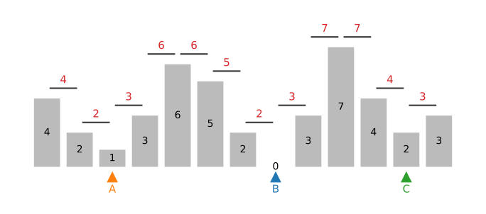
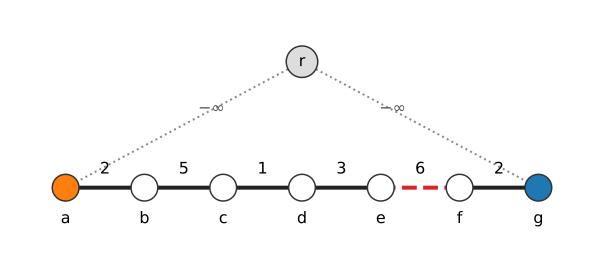
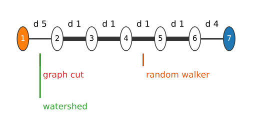
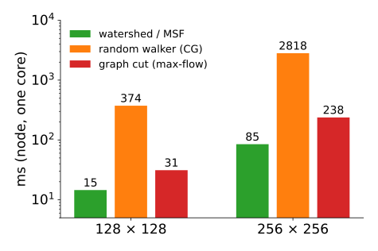

Watershed as a minimum spanning forest
About this lecture
The watershed day flooded a landscape from markers with a priority queue. The last unit built spanning trees with Kruskal. Today they turn out to be the same algorithm.
- Flooding on edges: Meyer’s flooding = Prim’s algorithm from all markers at once.
- The result is a minimum spanning forest; each pixel goes to the marker it reaches over the lowest highest pass.
- Why the watershed leaks and why it does not shrink.
- Seeded segmentation three ways: graph cut (sum), random walker (squares), watershed (maximum); the power watershed as a family.
Slides titled The math give the formulas and proofs; the ideas are complete without them.
Recall: flooding from markers
Meyer’s flooding: put the neighbours of every marker in a priority queue keyed by their height; repeatedly take the lowest pixel, give it the label of the neighbour that queued it, and queue its unlabelled neighbours. Equal heights leave in first-in, first-out order.
- The water rises from all markers at once; where floods from two markers meet, there is a watershed line.
- The math slide of that unit called it a shortest-path search in which the cost of a path is its highest point instead of its length.
Today we re-read it with the heights on the edges.
Flooding on edges
Give each edge the height of the pass between its two pixels, d_{pq} = \max(f_p, f_q) (red numbers, right).
Now flooding is: always add the cheapest edge leaving the labelled set, and give its new pixel the label of the old one.
That is Prim’s algorithm, started from all markers at once (A, B, C, right). The trees grown from the markers form a minimum spanning forest (MSF): the cheapest set of edges in which every pixel is connected to exactly one marker.
The edges that are never added because they would join two different trees are the watershed cut.

Prim from two markers
![Four frames on a 4 by 4 grid of heights with edge altitudes max of the two heights. Marker A (orange) is the top-left cell, marker B (blue) the bottom-right cell. Step 2: A has taken the two cells next to it (edges 2 and 3). Step 7: A has grown down the left column and into the 5; B has taken the 6 to its left (edge 6). Step 14: both trees have grown; the first cut edge (red, dashed) lies where they meet at altitude 7. Step 24: all cells labelled: A owns the left two columns and the top row up to the 9, B the bottom-right block and the right column; red dashed edges between them are the watershed cut.](fig-prim.svg)
Each step takes the cheapest queued edge (ties: first in, first out). Orange grows first because its edges are lower; blue starts only when the queue reaches altitude 6. An edge whose two ends already have different labels is a cut edge (red).
Try it: Prim from markers
The virtual root, and Kruskal again
Add one extra node r, joined to every marker by an edge of weight -\infty. Run Kruskal (sort, join unless same component). Then delete r.
- The -\infty edges are taken first: all markers hang from r.
- Every other edge is taken iff it joins a tree to a still unlabelled piece; an edge between two trees would close a cycle through r: skipped, a cut edge.
- Deleting r leaves one tree per marker: the same forest as Prim’s.
Right: the chain a–g, markers at a and g; the 6-edge (red) is the cut.

The math: seeded MSF
- Construction. Graph G with markers m_1, \dots, m_K. Add a node r and edges (r, m_i) of weight -\infty. Any minimum spanning tree T of the extended graph contains all (r, m_i) (they are the cheapest edges across any split separating r from m_i, cut property). Removing r splits T into exactly K trees, one per marker: a spanning forest rooted at the markers. Its weight is minimal among all such forests (any rooted forest plus the K root edges is a spanning tree of the extended graph).
- Prim from r first takes the K root edges (in marker order), then always the cheapest edge leaving the labelled set: this is exactly Meyer’s flooding with edge altitudes. Equal weights: FIFO gives one particular MSF among several.
- The cut edges are the edges of G between different trees.
Minimax paths, again
From the last unit: the path in a minimum spanning tree between two pixels has the lowest highest edge of all paths: the minimax distance.
So in the seeded MSF, each pixel goes to the marker it can reach with the lowest highest pass. That is the flooding picture: the water of that marker reaches it first.
On the chain a–g (weights 2, 5, 1, 3, 6, 2; markers at a and g): pixel d reaches A over passes 2, 5, 1 (highest 5), B over 3, 6, 2 (highest 6). 5 < 6: d belongs to A. The cut is the 6-edge.
Ties (plateaus, equal passes) are decided by the queue order (FIFO): the watershed day’s plateau rule.

The math: minimax assignment and watershed cuts
- Minimax assignment. In a seeded MSF, every node p lies in the tree of a marker m with \pi(p, m) = \min_{m'}\pi(p, m'), where \pi(p, m) = \min_{\text{paths } p \to m}\max_{e} d_e (ties aside). Proof: apply the minimax property of MSTs to the extended graph with the virtual root: the tree path from p to r minimises the highest edge among all paths to r, i.e. to any marker.
- Watershed cuts (Cousty, Bertrand, Najman & Couprie, 2009). On an edge-weighted graph, a set of edges is a watershed cut if a drop of water falling on either side of each of its edges, flowing downhill along edges, reaches different regional minima (the drop-of-water principle). Theorem: the watershed cuts are exactly the cuts of the minimum spanning forests rooted at the regional minima.
- Only the order matters. Any increasing transformation of the weights (d \mapsto d^2, d + c, \log d) leaves the sorted order, hence Prim’s and Kruskal’s choices, hence the MSF and the watershed, unchanged.
Drop of water: the unseeded watershed
Without markers, put one marker on every regional minimum of the edge altitudes: the seeded MSF becomes the classic watershed (one region per basin).
- Watershed cuts obey the drop-of-water principle: a drop placed on either side of a cut edge slides down along ever-lower edges into different minima.
- That is the intuition of the landscape unit, now as a theorem on graphs, with no “watershed line” pixels: the boundary consists of edges between pixels.
- Over-segmentation (one basin per noise minimum) is the same problem as on the watershed day; its cure (markers, h-minima, merging basins) leads to the hierarchies unit.
Why the watershed leaks, and why it does not shrink
- Leaks. The cost of a path is its maximum edge: only the single lowest pass on the way matters. One low spot in a ridge (a gap in a boundary) is enough for a whole region to be flooded from the wrong marker. That is the leakage of the gradient watershed, now explained.
- Noise makes it worse: where the image is flat but noisy, the highest pass on every path is set by noise, and the boundary between two floods wanders.
- No shrinking. Nothing in the result depends on the length of the boundary or the size of a seed: a thin protrusion with a high rim stays with its marker, a tiny seed is not “cut off cheaply”. (Contrast the graph cut.)
- Fast: a sort or a bucket queue and one pass, near-linear in the number of pixels.
Seeded segmentation three ways
| graph cut | random walker | watershed (MSF) | |
|---|---|---|---|
| combines the weights by | sum of cut weights | sum of squares of differences | maximum along a path |
| labels | hard | soft (probabilities) | hard |
| boundary length | penalised: shrinks | spread over weak links | ignored |
| leaks through a narrow gap | rarely (gap = short cut) | partly (bulges) | yes (one low pass) |
| decided by seed position | small seeds get cut off | yes (resistance) | only through passes |
| cost | max-flow | linear system | sort + one pass |
One weight per edge, the same seeds: three ways of adding up.
The three methods on the same seeds
![A 3 by 3 grid: columns random walker, graph cut, watershed; rows three synthetic scenes with the same seeds per row. Row 1, a dark wall with a 3-pixel gap and strong noise (seeds far left and bottom right): graph cut 8257 pixels with the boundary straight through the gap; walker 8483 with a small bulge through the gap; watershed 8443 with a ragged bulge. Row 2, a smooth ramp without edges, object seed at x = 40 and a small background seed at the right border: walker 12 131 pixels, boundary near x = 87; graph cut 16 336 and watershed 16 222: almost everything object, the background seed nearly cut off. Row 3, two touching discs: all three about 1900 pixels.](fig-three.png)
Same seeds, same edges (\sigma = 20; dissimilarity |\Delta I| for the watershed). Object pixels:
- gap in a wall (noise 16): graph cut 8257 (closes the gap), walker 8483 (bulges), watershed 8443 (bulges, ragged);
- no edge, small background seed: walker 12 131 (boundary halfway in resistance), graph cut 16 336 (cuts a tiny circle around the background seed: shrinking), watershed 16 222 (noise passes decide);
- weak boundary between two discs: 1902, 1908, 1911: all three agree.
The differences show up where the image does not decide.
Try it: three methods side by side
The power watershed: one family
Couprie, Grady, Najman & Talbot (2011): minimise \sum_{(p,q)} w_{pq}^{\,\alpha}\,|x_p - x_q|^{\,\beta} with seeds fixed (affinities w; exponents written α, β here).
- \beta = 1 (finite α): a graph cut; \beta = 2: the random walker.
- As \alpha \to \infty, only the order of the weights matters: the minimiser becomes a cut of a maximum spanning forest of the affinities (= minimum spanning forest of the dissimilarities): a watershed.
- With \beta = 2 and \alpha \to \infty, the random walker decides the ties on plateaus, where plain flooding uses arrival order: the power watershed.
(The paper gives the full table of limits, including shortest-path forests; we use only these three corners.)
Speed
Measured in node on one core, two point seeds:
- MSF / watershed: a sort and one pass, \approx 15 ms at 128^2, 85 ms at 256^2 (including building the edge list).
- graph cut: one max-flow, 31 and 238 ms.
- random walker: conjugate gradients to 10^{-5}, about 0.4 s and 2.8 s (a better preconditioner would help a lot).
This is why the watershed is the default first step on large 3D data, often on a boundary map predicted by a network.

Prim and Dijkstra
- Prim adds the cheapest edge leaving the labelled set: the cost of reaching a pixel is the highest edge on the way.
- Dijkstra (the live-wire unit of the dynamic-programming day) adds the pixel with the cheapest path sum.
- Replace the sum by a max and Dijkstra becomes the watershed: this is the “shortest path with a different length” of the flooding unit.
The same priority queue, three different ways of adding up costs.
Summary
- With edge altitudes d_{pq} = \max(f_p, f_q), Meyer’s flooding is Prim’s algorithm from all markers; the result is a minimum spanning forest, its cut edges are the watershed.
- Equivalently: Kruskal with a virtual root joined to all markers.
- Each pixel goes to the marker with the lowest highest pass (minimax); only the order of the weights matters.
- Watershed cuts satisfy the drop-of-water principle (Cousty et al.).
- It leaks (one low pass is enough) but does not shrink (no length term), and it is the fastest.
- Graph cut = sum, random walker = squares, watershed = max; the power watershed connects them.
Where this leads
- Hierarchical segmentation: flood without stopping, record when basins merge: a tree of all watersheds.
- Superpixels: a watershed from a grid of markers gives compact superpixels.
- Instance segmentation (modern deep learning): a network predicts boundaries or distances, the watershed turns them into objects.